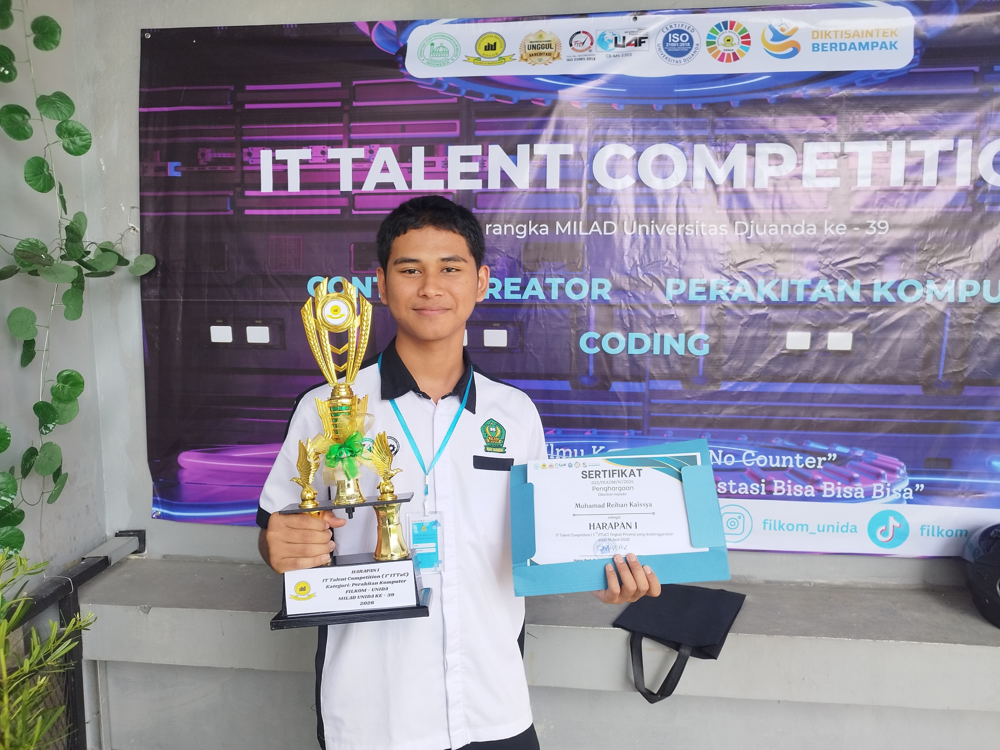
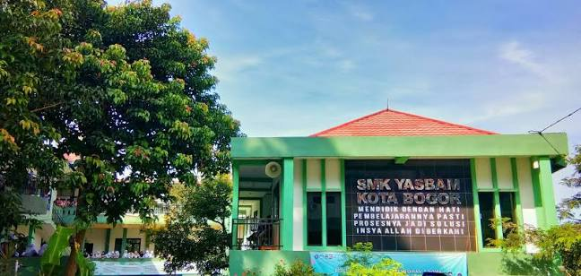

Halo, Saya Reyy
Pelajar SMK | Jurusan Teknik Jaringan Komputer dan Telekomunikasi
Saya seorang pelajar yang passionate di dunia IT. Sedang mempelajari web development dan ingin berkembang menjadi programmer profesional di masa depan.

Sedikit Tentang Saya
Perjalanan singkat menuju dunia teknologi

Siswa SMK Bersemangat
Saat ini saya menempuh pendidikan di SMK dengan jurusan yang berhubungan dengan teknologi informasi. Saya mulai tertarik dengan coding sejak kelas 10 dan terus belajar secara otodidak maupun di sekolah.
- Nama: Muhamad Reihan Kaissya
- Sekolah: SMK Yasbam
- Jurusan: Teknik Jaringan Komputer dan Telekomunikasi
- Kota: Bogor
Tentang Saya
Kenali lebih dekat siapa saya

Cerita Singkat
Saya adalah siswa SMK yang memiliki ketertarikan besar pada dunia
pemrograman dan teknologi. Perjalanan saya dimulai dari rasa penasaran
akan bagaimana sebuah website bisa dibuat, hingga akhirnya memutuskan
untuk mendalami bidang IT secara serius.
Saya percaya bahwa konsistensi dan rasa ingin tahu adalah kunci
untuk berkembang di industri yang cepat berubah ini.
Detail Pribadi
- Nama Lengkap: Muhamad Reihan Kaissya
- Tanggal Lahir: 1 Oktober 2009
- Asal Sekolah: SMK Yasbam
- Jurusan: Teknik Jaringan Komputer dan Telekomunikasi TJKT
- Kota: Bogor
- Email: Reihankaissya2009@gmail.com
Skill & Minat
Riwayat Pendidikan
Perjalanan akademik saya
SMK Yasbam
Jurusan Teknik Jaringan Komputer dan Telekomunikasi. Fokus pada Jaringan, internet, dan sistem telekomunikasi.
SMPN Satu Atap Caringin
Masa pengenalan dasar komputer dan mulai tertarik dengan teknologi.
SDN Tarikolot
Awal perjalanan pendidikan formal.
Sekolah Saya

Hubungi Saya
Silakan pilih cara yang paling nyaman untuk menghubungi saya